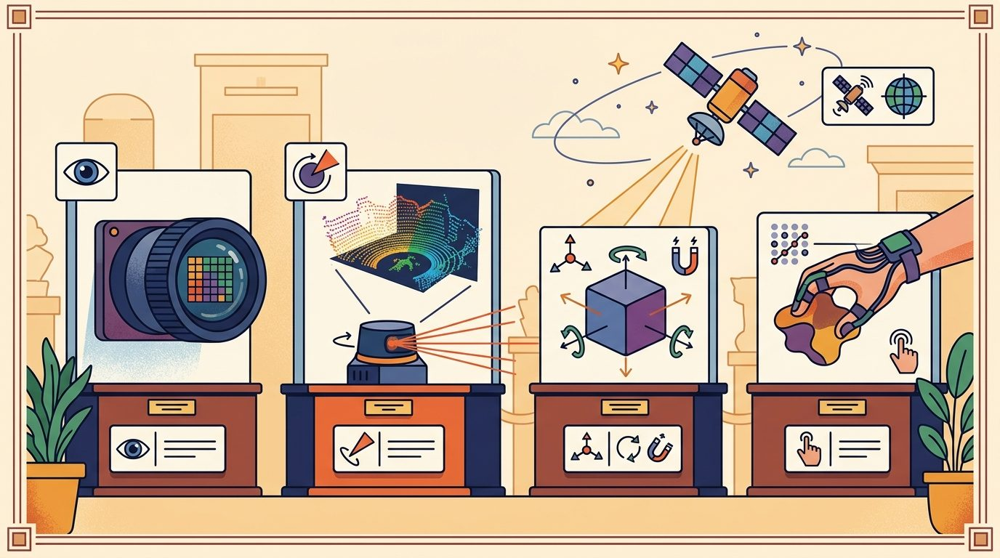
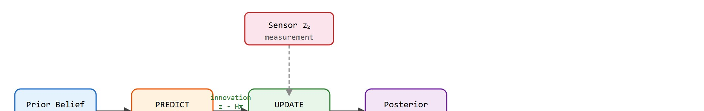
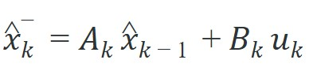
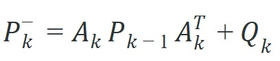
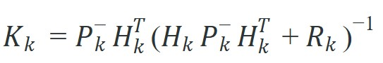
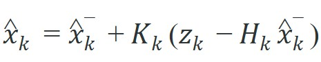
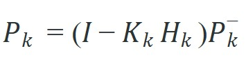
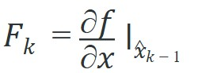
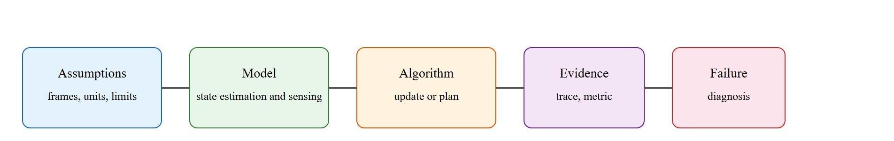

"Commit to nothing; carry a distribution. Update when the measurement arrives, not before."
A Prior With Reasonable Uncertainty

This section assumes familiarity with Gaussian noise models and covariance matrices introduced in section 8.5. The sensor fusion techniques in section 8.7 build directly on the Kalman filter developed here, showing how to combine estimates from multiple sensor streams. The particle filter ideas return in Part 6, where section 29.3 applies Monte Carlo localization to simultaneous localization and mapping (SLAM).
A Mars rover cannot stop and ask "where am I?" It carries a noisy inertial measurement unit (IMU), a sun sensor that saturates in dust storms, and wheel odometry that slips on loose regolith, the layer of loose broken rock and dust covering solid bedrock. Yet it navigates. The secret is Bayesian filtering: instead of guessing a single position, the robot maintains a probability distribution over all plausible positions and updates it every millisecond as new sensor data arrives. Kalman filters do this exactly for linear, Gaussian systems; extended and unscented variants (the unscented Kalman filter propagates a small set of deterministically chosen sample points, called sigma points, through the nonlinear model instead of linearizing it) handle the curved geometry of real joints and lenses; particle filters handle the full non-Gaussian chaos of cluttered environments. By the end of this section you will implement all three, tune them on real sensor logs, and know which to reach for first.
A self-driving car merging onto a highway at 30 meters per second receives a GPS fix only once per second. Yet it must place itself within a lane (about 3 meters wide) at every millisecond in between. It survives the 999 milliseconds of GPS silence by carrying a probability distribution over where it might be and propagating that distribution forward through its own motion. That trick, holding a belief instead of a point and reshaping it the instant evidence arrives, is the entire content of Bayesian filtering, and this section builds it from the linear Gaussian case up to the full non-Gaussian particle cloud. Figure 8.6A pictures this probability cloud being reshaped at every sensor reading.
Before that belief-propagating machinery can be built, the same engineering questions that govern any agent module have to be answered for the filter. A filter design answers four practical questions: what must the agent know, what can it observe, what action is available, and what evidence shows that the action worked under the stated conditions. Figure 8.6.B lays out the recurring loop that every filter in this section follows, where a prior belief is pushed through a motion model, corrected by a sensor measurement, and then handed forward as the prior for the next time step.

A representation earns its place when it changes the measurable action interface. In Bayesian filtering: Kalman, EKF, particle filters, the reader should keep asking which decision becomes easier, safer, or more reliable.
For Bayesian filtering: Kalman, EKF, particle filters, the practical design rule is to make the interface inspectable before optimization begins: inputs, outputs, units, latency, bounds, and failure labels should all be visible in the saved artifact.
The mechanism in Bayesian filtering: Kalman, EKF, particle filters is the contract between representation and action. Name what enters the module, what leaves it, which assumptions make that transformation valid, and which log would reveal a bad handoff.
The Kalman filter is the exact recursive solution to state estimation when the dynamics and the measurement are linear and all noise is Gaussian. It keeps a belief about the state as a mean vector $\hat{x}$ and a covariance matrix $P$, and it alternates two steps every time step: a predict step that pushes the belief forward through the motion model, and an update step that pulls it back toward a fresh measurement.
Let the state evolve as $x_k = A_k x_{k-1} + B_k u_k + w_k$ with process noise $w_k \sim \mathcal{N}(0, Q_k)$, and let the sensor report $z_k = H_k x_k + v_k$ with measurement noise $v_k \sim \mathcal{N}(0, R_k)$. The predict step is


The superscript minus marks the prior belief, before the measurement is seen. Notice that $P$ always grows in the predict step: pushing the belief through an imperfect model can only add uncertainty. The update step then incorporates the measurement $z_k$:



The matrix $K_k$ is the Kalman gain, and it is the heart of the filter. Read it as a trust dial. When $K_k \to 0$ the filter ignores the measurement and rides on the prediction; when $K_k \to I$ (in the scalar sense) it throws away the prediction and snaps to the sensor. The gain is computed automatically from the relative sizes of the prior covariance $P^-_k$ and the measurement noise $R_k$: a confident prediction or a noisy sensor lowers the gain, and a vague prediction or a sharp sensor raises it.
Think of a chef adjusting a sauce to hit a target saltiness. If the chef has been following a trusted recipe with precise gram weights, she hardly needs to taste (low gain: the model is reliable). If she threw in a rough handful by feel and is unsure, she tastes carefully and adjusts hard (high gain: the prediction is vague, so trust the direct measurement). The Kalman gain does exactly this arithmetic automatically: it reads how confident the recipe (the motion model) was and how reliable the tasting spoon (the sensor) is, then sets the dial between them so the correction is always proportional to how much each source deserves to be trusted.
The term $z_k - H_k \hat{x}^-_k$ is the innovation, the difference between what the sensor actually reported and what the prediction expected it to report. A filter that is working well produces an innovation that looks like zero-mean white noise; a biased or growing innovation is the clearest signal that the model or the noise settings are wrong.
So far: the predict step advances the belief and grows its uncertainty $P^-_k$, the update step pulls the belief back toward the measurement using the Kalman gain $K_k$ as a trust dial between model and sensor, and the innovation $z_k - H_k\hat{x}^-_k$ measures how surprised the filter is by each new reading.
$Q_k$ is the process noise: raise it to tell the filter to trust the motion model less and the sensor more. $R_k$ is the measurement noise: raise it to tell the filter to trust the sensor less and the model more. Almost all hand tuning of a Kalman filter is choosing the ratio between these two.
The cleanest way to feel the predict-update loop is to track a target that moves at roughly constant velocity while measuring only its position. The state is $x = [\text{position}, \text{velocity}]^T$. The motion model says position advances by velocity times $\Delta t$ and velocity stays put, so $A = \begin{bmatrix} 1 & \Delta t \\ 0 & 1 \end{bmatrix}$. The sensor sees position only, so $H = [1\ \ 0]$. Velocity is never measured directly; the filter infers it from how position changes, which is exactly what makes the example instructive.
# 1D constant-velocity Kalman filter.
# State x = [position, velocity]^T. We measure noisy position only.
import numpy as np
dt = 1.0
A = np.array([[1.0, dt], # position += velocity * dt
[0.0, 1.0]]) # velocity constant
H = np.array([[1.0, 0.0]]) # measure position only
Q = np.array([[0.01, 0.0], # process noise: the model is not perfect
[0.0, 0.01]])
R = np.array([[1.0]]) # measurement noise variance (sigma^2 = 1)
# Ground truth: starts at 0, moves at 1.0 unit/step.
rng = np.random.default_rng(7)
steps = 20
true_pos = np.arange(steps) * 1.0
meas = true_pos + rng.normal(0.0, 1.0, size=steps)
x = np.array([[0.0], [0.0]]) # initial state guess
P = np.eye(2) * 5.0 # initial uncertainty (deliberately high)
print(" k meas est_pos est_vel P_pos")
for k in range(steps):
# Predict
x = A @ x
P = A @ P @ A.T + Q
# Update
z = np.array([[meas[k]]])
S = H @ P @ H.T + R
Kk = P @ H.T @ np.linalg.inv(S) # Kalman gain
x = x + Kk @ (z - H @ x) # innovation correction
P = (np.eye(2) - Kk @ H) @ P
print(f"{k:2d} {meas[k]:6.2f} {x[0,0]:7.2f} {x[1,0]:6.2f} {P[0,0]:6.3f}")
print(f"\nfinal velocity estimate = {x[1,0]:.3f} (truth = 1.000)")
print(f"final position variance = {P[0,0]:.3f} (started at 5.0)")Trace the 1D tracker through a single time step with real numbers. Start with $\hat{x} = [0,\ 0]^T$ (position 0, velocity 0), $P = \begin{bmatrix} 5 & 0 \\ 0 & 5 \end{bmatrix}$, $\Delta t = 1$, $Q = 0.01 I$, $R = 1$, and the first measurement $z = 0.85$.
Predict. $\hat{x}^- = A\hat{x} = [0,\ 0]^T$ (still zero, since velocity is zero). The covariance grows: $P^- = A P A^T + Q = \begin{bmatrix} 1 & 1 \\ 0 & 1 \end{bmatrix}\begin{bmatrix} 5 & 0 \\ 0 & 5 \end{bmatrix}\begin{bmatrix} 1 & 0 \\ 1 & 1 \end{bmatrix} + 0.01 I = \begin{bmatrix} 10.01 & 5 \\ 5 & 5.01 \end{bmatrix}$.
Update. Innovation covariance $S = H P^- H^T + R = 10.01 + 1 = 11.01$. Kalman gain $K = P^- H^T / S = [10.01,\ 5]^T / 11.01 = [0.909,\ 0.454]^T$. Innovation $= z - H\hat{x}^- = 0.85 - 0 = 0.85$. New estimate $\hat{x} = [0,0]^T + [0.909, 0.454]^T \times 0.85 = [0.773,\ 0.386]^T$. So after one reading the filter already infers a non-zero velocity (0.386) purely because it had to move the position to match the sensor. Position variance drops to $P_{00} = (1 - 0.909) \times 10.01 = 0.91$, down from the predicted 10.01.
Running this prints a converging trace. The velocity estimate climbs from 0 toward 1.0 within a handful of steps, and the position variance shrinks monotonically as measurements accumulate. Raw sensor error stays near sigma = 1.0; the filter collapses position variance from 5.0 to about 0.37 over the same 20 steps, a 13x reduction, by squeezing information out of every past sample through the motion model. That same structure recovers velocity, a quantity the sensor never measures, from the time-correlation of position readings. A filter that cannot say how wrong it might be is not a state estimator; it is a rumor.
That clean convergence held only because every equation above was linear; the moment the motion or the sensor curves, the exact Kalman machinery no longer applies and must be approximated. Real robots rarely have linear dynamics. A differential-drive robot turning by a heading angle, a range-bearing landmark measurement (a sensor reporting distance and angle to a known landmark, rather than the landmark's x and y coordinates directly), and a camera projection are all nonlinear. The extended Kalman filter (EKF) handles this by linearizing the nonlinear functions around the current estimate. If the motion model is $x_k = f(x_{k-1}, u_k)$, the EKF replaces $A_k$ with the Jacobian

evaluated at the current estimate, and similarly replaces $H_k$ with the Jacobian of the measurement function. The covariance equations then run exactly as before but with these local linear approximations. The EKF is the workhorse of classical robot localization and SLAM, but it inherits one weakness: if the function is strongly curved near the estimate, or if the estimate is far from the truth, the linearization point is poor and the filter can diverge while still reporting a confident covariance.
The unscented Kalman filter (UKF), mentioned earlier and used later in this section's comparison table, sidesteps the Jacobian entirely: instead of linearizing $f$ and $h$ analytically, it deterministically picks a small set of sample points around the current estimate, called sigma points, chosen so their weighted mean and covariance exactly match $\hat{x}_{k-1}$ and $P_{k-1}$. Each sigma point is pushed through the true nonlinear function $f$ (no linearization needed), and the resulting spread of transformed points is used to reconstruct the predicted mean $\hat{x}^-_k$ and covariance $P^-_k$. The same idea applies to the measurement update. Because the UKF never needs a derivative, it avoids Jacobian errors and tends to track curved functions more accurately than the EKF at a similar computational cost, though it still assumes the belief stays approximately Gaussian, so it cannot replace the particle filter for genuinely multimodal beliefs.
When your EKF state vector includes a heading angle (yaw), always wrap the angular component of the innovation into $(-\pi, \pi]$ before applying the Kalman gain. In Python this is innovation[2] = (innovation[2] + np.pi) % (2 * np.pi) - np.pi. Without this step, a robot facing nearly north (heading $\approx +\pi$) that receives a bearing measurement of $\approx -\pi$ produces an innovation near $2\pi$ instead of near zero, and the gain correction drives the estimate in the wrong direction. FilterPy's KalmanFilter does not apply this fix automatically; you must add it in your residual function.
When the belief is non-Gaussian (multimodal, sharply bounded, or shaped by discrete hypotheses), no single mean-and-covariance pair describes it. The particle filter abandons the Gaussian assumption entirely. It represents the belief as a cloud of weighted samples called particles. Each particle is one hypothesis about the state. The predict step pushes every particle through the motion model with sampled noise. The update step reweights each particle by how well it explains the measurement. A resampling step then concentrates particles in high-probability regions. This Monte Carlo approach underlies Adaptive Monte Carlo Localization (AMCL), the standard ROS localization stack. Particles are a democracy of hypotheses, not a dictatorship of the mean: the filter handles the kidnapped-robot problem, symmetric environments, and heavy-tailed noise (measurement errors with occasional large outliers that a Gaussian model badly underestimates) where the Kalman family fails. The cost is compute, which grows with particle count. The risk is particle impoverishment, where resampling discards the rare particle that happened to be correct.
A common assumption is that tuning Q and R carefully is enough to make a Kalman filter work on any robot task, including those with ambiguous or symmetric environments. This is wrong: no choice of noise matrices can make a single Gaussian represent two separated hypotheses simultaneously. In embodied AI, genuine multimodal uncertainty arises constantly, such as when a robot enters a symmetric corridor and cannot distinguish which end it is in from odometry alone. A Kalman filter collapses to one location regardless of Q and R, and the covariance shrinks over time, giving false confidence. The correct mental model is that the Kalman family and particle filters address different questions: Kalman asks "where is the peak of a Gaussian belief?" while particle filters ask "what is the full shape of the belief, however non-Gaussian?"
In embodied AI, this matters because physical robots encounter genuinely multimodal uncertainty. A warehouse robot entering a long, symmetric corridor cannot distinguish which end it entered from odometry alone, so a Kalman filter collapses to one wrong location and never recovers. Control actions built on that false certainty cause collisions or mission failures. Turning toward a dock that is actually behind the robot is one such action. Particles keep both hypotheses alive until a distinguishing feature, a sign, a lighting difference, a landmark, resolves the ambiguity. In practice, a ROS AMCL setup with a few hundred particles and a reasonably distinctive environment often recovers correct localization within on the order of ten update cycles, though the exact count depends on particle count, sensor quality, and how distinguishable the two locations are; the equivalent EKF typically does not recover at all within that window, since the underlying linear-Gaussian assumption means new evidence can shift a single Gaussian's mean but cannot split it into two competing hypotheses. The consequence is not abstract: a single Gaussian belief feeding a planner can cause a physical robot to act with confidence in the wrong place.
The mechanism runs in three repeating steps. In the predict step, each particle is propagated forward by sampling the motion model: a particle at pose $(x, y, \theta)$ after command $(v, \omega)$ draws a noise sample and lands at a slightly different pose, so the cloud spreads to reflect motion uncertainty. In the update step, each particle receives a weight proportional to $p(z \mid x_i)$, the likelihood that the current sensor reading would be observed if the robot were truly at that particle's pose; a particle near a shelf pattern that matches the laser scan gets high weight, one in empty space gets near zero. In the resample step, particles are drawn with replacement from the weighted distribution so high-weight particles multiply and low-weight ones vanish, concentrating the cloud where the evidence is strong.
Consider a mobile robot localizing in a warehouse. If it uses wheel odometry and a planar laser scanner, range-bearing measurements to landmarks are nonlinear (the sensor reports distance and angle, not x and y), but the nonlinearity is mild and a Jacobian can be computed analytically: reach for the EKF. Now suppose the robot is kidnapped: picked up and placed in a new corridor without warning. The EKF's single Gaussian belief cannot represent "I might be at aisle 3 OR aisle 7"; it will stubbornly track one location with false confidence. A particle filter initializes thousands of hypotheses across the map, lets the weight of particles near aisle 7 dominate once the scanner sees the right shelf pattern, and recovers within seconds. The transition point is not about map size or speed; it is about whether a single Gaussian can describe your uncertainty.
The fragment should expose prediction, innovation, gain or weights, covariance, and accepted measurements. FilterPy is useful for teaching; robot_localization and AMCL carry the pattern into ROS systems.
The common mistake in Bayesian filtering: Kalman, EKF, particle filters is to celebrate the component score before checking the closed-loop handoff. The failure usually appears at the boundary: stale state, wrong frame, delayed action, saturated actuator, or metric that ignores the real task cost.
When the Skydio X2 drone fuses its downward optical-flow camera with IMU in an EKF for indoor flight, the team logs more than "did it hold position." They record the per-axis innovation from each optical-flow update, the covariance trace, and the moment the filter rejects a measurement (for example when the floor texture goes blank over a glossy surface and flow returns garbage). Those logs are what reveal a near-miss: a drone that held position over a textured warehouse floor but whose covariance was already ballooning over the polished concrete it was about to drift across. Final-success logging alone hides that the EKF was one bad measurement away from a flyaway.
For bayesian filtering: kalman, ekf, particle filters, the useful test is simple: could a teammate point to the log line, plot, or trace that proves the idea changed the agent's next action?
Three active research directions are pushing Bayesian filtering beyond its classical assumptions. First, foundation-model state estimators: the 2024 work "DPSE" from ETH Zurich (Buchner et al., ICRA 2024) and the concurrent "UniKF" line from CMU Robotics demonstrate that a single transformer trained on diverse sensor logs can perform in-context Kalman-style updates without ever specifying $A$, $H$, $Q$, or $R$ explicitly; the model learns what constitutes a measurement update from examples, generalizing to sensor configurations it never saw during training. Second, score-based and diffusion particle filters: work from the Oxford Torr Vision Group and from MIT CSAIL (2024-2025) replaces the explicit likelihood $p(z \mid x)$ with a learned score function trained via denoising diffusion; this lets the filter handle image-conditioned localization where writing down a closed-form sensor model is intractable, while retaining the particle filter's ability to represent multimodal beliefs. Third, event-camera Bayesian filtering: the Dynamic Vision Sensor produces asynchronous spikes at microsecond resolution rather than frames; groups at TU Delft and the RPG lab at University of Zurich (Gallego et al. follow-up work, 2024) have developed EKF and particle filter variants that process each spike as an individual measurement update, cutting state-estimation latency by an order of magnitude compared to frame-based methods on fast-moving aerial robots. Open problem for a PhD student: all three directions above assume the filter's state space is fixed in advance. No principled method yet exists for a filter to autonomously grow its state vector (for example, adding a new contact mode or a new landmark) mid-sequence without resetting covariance and losing prior information. A solution would bridge Bayesian nonparametric models (Dirichlet processes, Indian buffet processes) with real-time recursive filtering under the latency budgets that physical robots require.
Can you name the observation, state estimate, action, success metric, and most likely failure mode for Bayesian filtering: Kalman, EKF, particle filters? If not, the system boundary is still too vague.
Bayesian filtering: Kalman, EKF, particle filters sits inside the Part II robotics contract: geometry defines where things are, kinematics defines what motion is possible, dynamics defines what motion costs, control defines how errors are corrected, and sensing defines what the agent can know on time, and sensor fusion combines those imperfect signals into a coherent belief.
A Bayesian filter is a predict-update loop whose covariance is part of the output, not a decoration. This makes the section useful to students, builders, and researchers at the same time: the idea has an intuitive role, a formal interface, a runnable check, and a failure mode that can be reproduced.
For Bayesian filtering: Kalman, EKF, particle filters, state estimation converts imperfect observations into a belief usable by control. Preserve calibration, covariance, timestamp, frame, dropout behavior, and latency.
| Tool or Library | What It Handles | Verification Check |
|---|---|---|
| OpenCV | handles camera models, calibration, projection, and vision preprocessing | Verify intrinsics, distortion, image timestamp, and frame-to-camera transform. |
| ROS 2 robot_localization | fuses odometry, IMU, GPS, pose, and twist streams through ROS estimation nodes | Verify covariance, frame IDs, timestamps, and rejected measurement counts. |
| FilterPy | teaches and prototypes Kalman, extended Kalman, unscented, and particle filters | Verify process noise, measurement noise, innovation, and covariance growth. |
| Kalibr | supports practical work on Bayesian filtering: Kalman, EKF, particle filters | Verify the library output against the hand-built baseline on one small case. |
| Open3D | supports practical work on Bayesian filtering: Kalman, EKF, particle filters | Verify the library output against the hand-built baseline on one small case. |
Use this recipe when turning Bayesian filtering: Kalman, EKF, particle filters into code, a simulator experiment, or a robot diagnostic. The point is not to use every library. The point is to keep the hand-built baseline and the maintained-tool path comparable.
For Bayesian filtering: Kalman, EKF, particle filters, compare methods only through one saved artifact that preserves the inputs, outputs, units, timestamps, latency budget, configuration, seed, metric definition, and failure labels relevant to this section. The comparison is meaningful only when the same script evaluates the same panel.
Extend the section exercise by adding one perturbation specific to Bayesian filtering: Kalman, EKF, particle filters and one latency or uncertainty check. Save the result in the EvidenceRecord schema, then explain which library output you trust and why.
Filtering failures come from a wrong process model, bad measurement likelihood, overconfident covariance, delayed updates, or particle impoverishment. Audit prediction, update, gating, and reset before changing the policy.
Bayesian filtering answers a simple robotics question: after the robot moves and a noisy sensor reports something, what should the robot believe now? The Kalman filter gives the closed-form answer for linear Gaussian systems, the extended Kalman filter linearizes a nonlinear model around the current estimate, and particle filters represent belief with samples when one Gaussian is not enough. Figure 8.6.T summarizes the chain this section must preserve when moving from a teaching example to a real embodied system.

The linear Kalman filter predicts $\hat x^-_t=F\hat x_{t-1}+Bu_t$ and $P^-_t=FP_{t-1}F^\top+Q$, then computes $K_t=P^-_tH^\top(HP^-_tH^\top+R)^{-1}$. The update is $\hat x_t=\hat x^-_t+K_t(z_t-H\hat x^-_t)$ and $P_t=(I-K_tH)P^-_t$. The term $z_t-H\hat x^-_t$ is the innovation, the part of the measurement that the prediction failed to explain.
| Filter | Assumption | Failure Diagnostic |
|---|---|---|
| Kalman filter | Linear dynamics, linear measurement model, Gaussian noise. | Innovation is biased, covariance collapses, or residuals are not white. |
| Extended Kalman filter | Nonlinear model is locally well approximated by a Jacobian. | Linearization point is poor, angle wrapping is mishandled, or Jacobians are wrong. |
| Unscented Kalman filter | Belief can stay approximately Gaussian while sigma points capture nonlinear effects. | Sigma-point spread misses discontinuities or constraints. |
| Particle filter | Belief can be represented by weighted samples. | Particle depletion, poor proposal distribution, or resampling removes rare true hypotheses. |
Expected output is a belief trace, not only a best estimate. The mean should move toward credible measurements, the covariance should contract only when information is actually added, and the innovation should look like noise after the model explains what it can explain.
A filter fails when it reports high confidence after unmodeled slip, delayed measurements, a bad Jacobian, or particle impoverishment. Smooth output is not evidence of a correct belief.
Core references for Bayesian filtering: Kalman, EKF, particle filters: Modern Robotics; Murray, Li, and Sastry; Siciliano et al.; LaValle; and official documentation for Drake, MuJoCo, Pinocchio, CasADi, python-control, GTSAM, ROS 2, and OpenCV as applicable.
Use these references to check notation, frame conventions, units, solver assumptions, and maintained-library behavior.
Bayesian filtering: Kalman, EKF, particle filters is useful when it makes the perception-action loop more reliable, not when it merely adds a more impressive model name.
Design a method-matched experiment for Bayesian filtering: Kalman, EKF, particle filters. Specify the environment, observations, actions, metric, one perturbation, and the library output you would compare against the hand-built baseline.
Goal. Build intuition for how the process-noise matrix $Q$ and measurement-noise variance $R$ set the filter's trust dial, by watching position variance and tracking error respond to the ratio between them.
Tools needed. Python with NumPy and Matplotlib, plus the FilterPy library (pip install filterpy). Start from Code Fragment 8.6.1 or use filterpy.kalman.KalmanFilter with the same $A$, $H$ constant-velocity model. Generate a synthetic constant-velocity track with Gaussian position noise of known sigma.
What to vary. Sweep $R$ across roughly $0.01,\ 1,\ 100$ while holding $Q = 0.01 I$ fixed, then sweep $Q$ across the same range with $R$ fixed. Run at least 50 time steps per setting.
What to observe. Plot the Kalman gain $K_{00}$, the position variance $P_{00}$, and the root-mean-square error against ground truth for each setting. You should see that a large $R$ (distrust the sensor) makes the estimate lag and ride the model, while a tiny $R$ makes it chatter and chase noise; an intermediate ratio minimizes RMSE. Then deliberately set $R$ to one tenth of the true noise variance and confirm the covariance reports false confidence (small $P$) even as the actual error stays large, the classic overconfidence failure.
Beginner (weekend): 1D Kalman tracker in Gymnasium. Build a Gymnasium environment where a cart moves at constant velocity with additive Gaussian noise on position measurements, then implement the predict-update loop from Code Fragment 8.6.1 and plot how position variance contracts over time. The key challenge is choosing Q and R by hand and observing how wrong ratios cause the filter to either ignore measurements or chase noise.
Intermediate (1-2 weeks): EKF-based robot localization in PyBullet. Simulate a differential-drive robot in PyBullet driving through a landmark-filled arena, implement an EKF that fuses wheel odometry with range-bearing landmark measurements using analytic Jacobians, and compare its trajectory estimate against ground-truth pose. The key challenge is correctly wrapping the angular innovation to avoid the heading-flip failure described in the tip callout above.
Intermediate (1-2 weeks): Monte Carlo localization with ROS2 and a simulated laser scanner. Use the ROS2 nav2 AMCL node with a simulated TurtleBot3 in Gazebo, inject a kidnapped-robot event by teleporting the robot to a new location mid-run, and measure how quickly the particle cloud recovers versus how a Kalman-only approach fails to recover at all. The key challenge is tuning the number of particles and the resampling threshold so the filter stays alive during global uncertainty without becoming too slow for real-time operation.